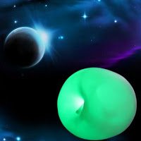

28 iРай
Небеса. Все пронизывает белый струящийся свет. На роскошном облаке сидит древний умудреный опытом старик, вокруг него сидят крылатые благообразные люди в расшитых одержах и играют на арфах. А над ними сияет большая табличка:
"Рай. Судный день"
И молвил Старик:
- Ну вот, совсем упал на нас спрос. Плохи дела наши. Раньше отбоя от честного народа не было - мы еще выбирали, кого брать. А теперь мы уже никому не нужны
- Все атеистами стали, ей богу - вздохнул ангел
- Сидят и жрут яблоки, - ответил второй
- Эххх... все же зря мы ЕГО выгнали - сказал Старик
- Как зря? - вмешался один из ангелов - какую бы славу он нам создал? ты посмотри только чего он творил!
- так без него-то еще хуже
- яблоками людей покормил, понимаешь, глаза им открыл... - буркнул первый ангел
- Давайте звать Яблочника обратно!
- Черт возьми! Ни за что! - в сердцах воскликнул третий ангел
- Наша фирма на грани краха, - замялся Старик
- Да-да, я уверен, он что-нибудь придумает! - поддержал первый ангел
Начинается древний ритуал. В воздухе завертелась воронка, из нее вылезло нечто, сформировавшееся в мужчину с большим лбом, в круглых очках и черном костюме.
Он бесцеремонно ввалился, уселся поудобнее и закинул ноги на облако
- Ну что, за работу, ребятки?
Собравшиеся кивают.
В то время как сонные, умиротворенные ангелы продолжают играть на арфах, новый посетитель сразу принимается за работу.
Несколько минут он разглядывает вывеску
- К чертям, все к чертям... вам хорошего пиар-менеджера не хватает!
С этими словами он сдирает мозолившую глаза вывеску:
"Рай. Судный день"
и вместо нее силой мысли творит новую:
"iРай. Ссудный день"
- Вот это бренд, я понимаю! - восклицает он, довольный своей работой.
Старик изумленно моргает, ничего не говоря.
- А это что за фигня... что за облака? это уже прошлый век, достойно всяких там мелкоокошечников! Облака прозрачными сделать, чтобы провода видны были! И разноцветными, чтоб были в тренде! О, ну совсем другое дело!
Затем обходит присуствующих
- А что за арфы? фигня.. что за звук? Такой звук только старую деву заставит проливать слезы! барахло! Что же мы с этим сделаем... а ну-ка!
Черный человек берет арфу и пропускает через нее ток, вытягивает солнечный луч, втыкает один его конец в арфу, а другой - в облако
- Теперь вы, мальчики, будете отжигать на электроарфах! Ну что, ребята, за что возьмемся теперь? Как там насчет древа мудрости? Даешь человеку по яблоку!
***
Стив, R.I.P. Думаю, для тебя и там найдется работенка, где бы ты ни оказался.